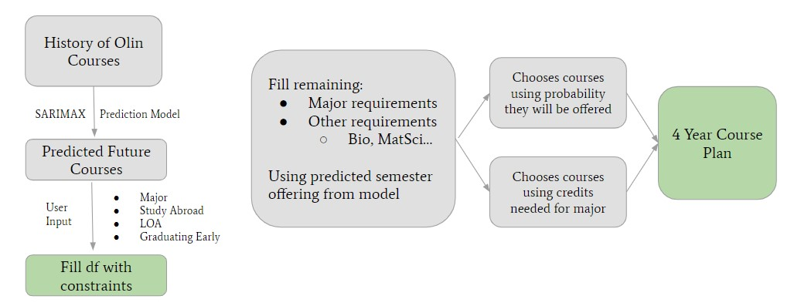

GitHub Repo: automatic-course-planner
Our project is an automatic course planner tailored for first-year Olin students. It is a mix of interactive visualization that outputs a personalized four-year course schedule when the user inputs their major, whether or not they will take an LOA, graduate early, study abroad, and which senior capstone they will take. The project predicts what courses will be offered for the next four years based on the past 10 years of Olin course offering data. The prediction model we used was the SARIMAX model which does time series forecasting.
Information about how to use our course planner is in the next section. Our full Github repository is here: https://github.com/olincollege/automatic-course-planner.
To use our course planner, follow the steps below.
git clone https://github.com/github_username/repo_name.git"pip install -r requirements.txt"For more detailed information, visit the README on our Github.
Our project is used by the user by first inputting their constraints: major, whether or not they will take an LOA, whether or not they will study abroad, whether or not they will graduate early, and what senior capstone they will take. Our system then uses a predictive algorithm that uses past course offerings to guess what courses will be offered in the next years. Taking into account user constraints and major requirements, a table of eight (or less) semesters of courses will be shown. If the user likes the schedule shown, they have the option to save the file to their computer as a CSV file. If not, the user can prompt the program to generate another schedule. Eventually add a video/screenshot of our program being used.
Below is a diagram of how our model generates the courses for the four-year course plan.
Likes reading and crocheting!
Class of 2027, E:Sustainability.
Likes playing guitar, figure skating, and baking!
Class of 2027, Maybe E:C.
Likes traveling and crocheting!
Class of 2027, E:C.
Does not know what she likes :p
Class of 2027, E:Robo.